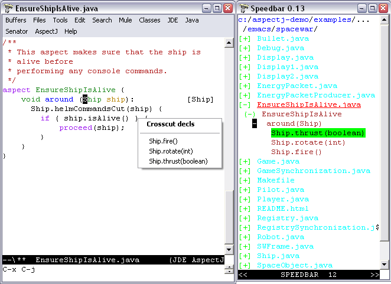

This guide describes AspectJ-mode extensions of JDEE for GNU Emacs and XEmacs, which provides enhanced editing and management of AspectJ code via a minor mode extension of JDEE mode. AJDEE's AspectJ support builds on aspectj-mode's extension of java-mode, also provided with the release. Included in this document are guidance for AJDEE's use, including an exploration of spacewar, and installation and compatibility. For more information on AspectJ, see http://eclipse.org/aspectj. See the README file in AJDEE's distribution directory for release-specific details.
In addition to the java-mode extensions provided by aspectj-mode, AJDEE provides (see graphic):

The AJDEE extensions of JDEE require no special effort to use. The speedbar and Classes menus provide additional sublists showing crosscutting structure. Selecting items in those lists navigates to the referenced item.
As a minor mode of JDEE mode, AJDEE enhances the speedbar to show the location of aspect, advice, and inter-type declarations. The affects/affected-by relationships are shown in the speedbar rather than embedding tags in the text (available as an option), and selecting the items in the speedbar will perform the expected navigation. The speedbar symbols have been extended for AspectJ as follows (see right side of figure):
Table 2. Enhancements to Speedbar in JDEE Mode
| Indication | Meaning |
|---|---|
| (+) name | A class, interface, or aspect; double mouse-1 will display its declarations |
| + methodSignature | Method has an advice that applies to it; double mouse-1 will display the relevant advice. |
| + adviceSignature | Advice declared by the containing aspect; double mouse-1 will display affected methods. |
| + introductionSig | Inter-type declaration declared by the containing class; double mouse-1 will display affected methods or classes. |
| | | methodOrFieldSig | Method or field has been declared by an aspect; double mouse-1 on text will navigate to the declaration; a + within the bars means that it has an advice that applies to it. |
A minus (-) is displayed on the item when the crosscutting items are displayed. AspectJ structure information is derived from the last compile of your AspectJ program.
The option AspectJ Compile File Specification can be customized from the Customize options under the AspectJ menu, changing the default compile specification given to ajc. See installation instructions for examples and other customizations.
AspectJ JavaDoc support is not available yet in 1.1.
To begin exploring Spacewar within emacs using JDEE and AspectJ mode:
Compile spacewar.
Change into the spacewar directory.
Type emacs Ship.java.
Pull down the JDEE menu and select the Speedbar entry to show the AspectJ files in the directory. Note that Ship.java is shown in red to denote that it is currently shown in the main buffer.
Double-click with the left mouse button on the + in front of the Ship.java entry. It should display an entry for the class Ship.
Double-clicking on Ship will navigate to its declaration in the buffer. Note that declarations of advice are annotated to note the types of objects that they advise, declarations of methods that are advised are annotated with the aspects that advise them, and so forth.
Double-clicking on the + in front of either will show the declared fields, methods, inter-type declarations, and advice. A + in front of any field or method means that it is introduced or advised; double-clicking will list entries for the introducers/advisers; double-clicking on them will navigate to their declarations. A + in front of any inter-type declarations or advice will will display its targets.
AJDEE requires the installation of JDEE 2.2.9beta4 or higher and small edits to your .emacs file to configure AJDEE and enable autoloading AJDEE when a .java file is loaded.
The first and last steps, with enhancements, can be found in the example Emacs initialization file sample.emacs and the sample JDEE project file sample.prj in the distribution. The latter also demonstrates a way to enable AspectJ mode on a per-project basis.
Make sure AJDEE , aspectj-mode, JDE, and supporting packages are on your load-path and are ``required''. This is an example for the 1.0 release:
;; I keep my emacs packages in C:/Emacs
(setq load-path
(append
'(
"C:/Emacs/aspectj-emacsMode-1.0" ; for AJDEE
"C:/Emacs/aspectj-emacsAJDEE -1.0"
"C:/Emacs/jde-2.2.9beta6/lisp"
"C:/Emacs/elib-1.0" ; for JDEE
"C:/Emacs/speedbar-0.14beta2" ; for JDEE
"C:/Emacs/semantic-1.4beta12" ; for JDEE /speedbar
"C:/Emacs/eieio-0.17beta3" ; for JDEE
)
load-path))
(require 'jde)
(require 'ajdee) ; can also appear in prj.el
[Optional] add -emacssym switch to the ajc and ajc.bat files in your AspectJ tools installations (in the /bin directory). If you invoke the compiler outside Emacs, this will ensure that your compiles always generate information for annotations and the jump menu in the form of .ajesym files.
Customize AJDEE 's compile options by putting a version of the following in your .emacs file or in a JDEE project file prj.el in your project's hierarchy (see the JDEE Project File Name option for the latter). Here is a simple example:
;; A default version for simple projects, maybe good for
;;; .emacs file.
(custom-set-variables
'(jde-compiler '("ajc" "ajc"))
'(jde-javadoc-command-path "ajdoc")
;; ajc requires all files to be named for a compile
'(aspectj-compile-file-specification "*.java"))
Here is an example for spacewar, in
examples/spacewar.
;;; These options are for the spacewar, in examples/spacewar.
(custom-set-variables
'(jde-compiler '("ajc" "ajc"))
'(jde-javadoc-command-path "ajdoc")
;; ajc provides an ``argfile'' mechanism for specifying all files.
'(aspectj-compile-file-specification "-argfile demo.lst")
;; *if* compiling packages, name root dir for package hierarchy
;; to tell ajc where .class files should go.
'(jde-compile-option-directory "..")
'(jde-run-working-directory ".."))
'(jde-run-application-class "spacewar.Game")
[XEmacs only] If you're installing JDE yourself, be sure to closely follow the JDEE installation directions for XEmacs, otherwise you may get out of date JDE .jar files.
Selecting Customize options from the AspectJ menu displays a number of options that customize AspectJ mode. These control whether annotations are shown by default, and whether the bovinator set up by JDEE runs. AspectJ Compile File Specification, specifies a compilation argument as an alternative to the current buffer's file or the run class's file. Example customizations are shown above and in the sample files discussed above.
Symptom: Get standard speedbar menus in JDE; no annotations display. Message:
AspectJ Mode Warning: Can't find declarations file for...
AspectJ file has not been compiled with ajc and the -emacssym flag, or was compiled with an obsolete version of ajc. After compilation, there should be a <file>.ajesym for every <file>.java in the build. If .ajsym files are present but error persists, recompile. Note that aspectj-mode for JDEE has a fallback view for uncompiled files.
Symptom: Navigations via the speedbar and the jump menu are off, annotations are misplaced in the code.
AspectJ mode operates by querying data derived from the most recent compile that includes the -emacssym flag. Recompile the entire program with ajc including the switch. Consider permanently installing the switch by editing the ajc and ajc.bat files in the /bin file in your distribution.
Symptom: Java files that are part of a Java project not written in AspectJ come up in aspectj-mode.
Emacs uses the file suffix (.java) to determine which mode to invoke. You can either globally toggle the AspectJ features from the AspectJ menu, or you can prevent AJDEE from coming up by moving the (require 'ajdee) expression from your .emacs file to a prj.el file in each AspectJ project's directory (see sample.prj in the distribution).
Symptom: Reported bug fixes and new features to AJDEE are not seen, or ajdee.el cannot be found or loaded, with message:
Error in init file: File error: "Cannot open load file", "ajdee"
Your load-path variable (set in your .emacs) is referring to an old release. Change your load-path to point at the directory for the current release. See the sample.emacs files in the distribution, for example.